第 8 章
输入组件
本章共 4 个小节 · PySide6 Basic Tutorial
本章要点：
- QLineEdit 与 QTextEdit 组件
- 数值输入组件——QSpinBox 与 QDoubleSpinBox
- 日期和时间输入组件——QDateTimeEdit、QDateEdit 与 QTimeEdit
8.1
QLineEdit
QLineEdit组件表示单行文本框（不能换行)，当输入焦点位于组件上时即可通过键盘输入文本。访问text方法可以获取已输入的文本，也可以通过 setText方法直接设置文本。
下面的示例将创建两个QLineEdit实例，单击按钮后会显示输入的内容。
#初始化顶层窗口
window = QWidget()
#设置窗口标题和大小
window.setWindowTitle("单行文本框")
window.resize(200, 100)
#布局
layout = QFormLayout()
window.setLayout(layout)
#第一个输入框
input1 = QLineEdit(window)
layout.addRow("输入文本1:", input1)
#第二个输入框
input2 = QLineEdit(window)
layout.addRow("输入文本2:",input2)
#按钮
btn = QPushButton("确定", window)
layout.addRow(btn)
#连接clicked信号
def onClicked():
#显示输入的文本
QMessageBox.information(
window,
"确认信息",
f"你输入的内容：\n1、{input1.text()}\n2、{input2.text()}"
)
btn.clicked.connect(onClicked)
#显示窗口
window.show()
结果如图 8-1和图 8-2所示。
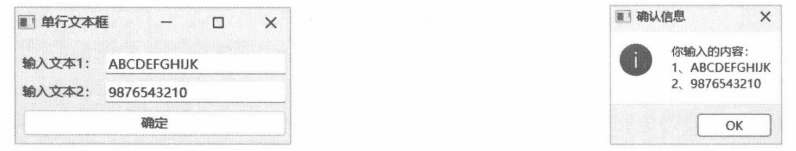
图 8-1 QLineEdit 组件示例
图 8-2 显示输入的内容
8.1.1 setText 方法和 insert 方法的区别
两个方法都能将文本设置到QLineEdit组件上，但二者的处理方式不同，主要表现为以下两点。
setText 方法会将 QLineEdit 组件的全部文本替换为新的内容，不管是否存在已选择的文本，也不管插入光标位于何处；insert 方法则会在光标处插入新的内容，旧的内容会保留。
如果 QLineEdit 组件设置了验证器（QValidator），insert 方法在插入文本时会进行验证。只有验证成功的内容才会插入 QLineEdit 组件的文本中，而 setText 方法并不会验证新内容是否有效。
8.1.2 示例：对比 setText 方法和 insert 方法
本示例将演示分别使用两个方法后产生的不同结果。自定义窗口类的代码如下：
class MainWindow(QWidget):
def __init__(self, parent:QWidget = None):
super().__init__(parent)
#布局
rootLayout = QFormLayout(self)
#第一组
self.btnSetText = QPushButton("setText", self)
self.btnSetText.clicked.connect(self.onSetTextClicked)
self.lineEdit1 = QLineEdit(self)
rootLayout.addRow(self.btnSetText, self.lineEdit1)
#第二组
self.btnInsert = QPushButton("insert", self)
self.btnInsert.clicked.connect(self.onInsertClicked)
self.lineEdit2 = QLineEdit(self)
rootLayout.addRow(self.btnInsert, self.lineEdit2)
def onSetTextClicked(self):
self.lineEdit1.setText("Sample Text")
def onInsertClicked(self):
self.lineEdit2.insert("Sample Text")
窗口使用 QFormLayout 布局。第一行左列的按钮被单击后会调用 setText 方法为右列的 QLineEdit组件设置新文本；第二行左列的按钮将用insert方法向右列的QLineEdit组件插入文本。
运行程序后，两个文本框中都输入ABCD，如图8-3所示。
在第一个文本框中，把输入光标定位到B的后面，再单击setText按钮。此时，文本框的全部文本都被清除，变成 Sample Text，如图 8-4所示。
可见setText方法会完全替换原有的内容。对于第二个文本框，也采用相同的测试方法，即输入光标定位在 B的后面，再单击 insert 按钮。此时，新文本 Sample Text 将插入 B 和 C之间，变成 ABSample TextCD，如图8-5所示。
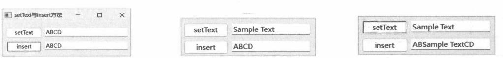
图 8-3 两个文本框都输入 ABCD
图 8-4 文本被替换为 Sample Text
图 8-5 Sample Text 插入 B 和 C 之间
8.1.3 示例：限制最大字符数
maxLength属性表示QLineEdit组件中能输入的最大字符数。当已输入的字符数量达到该限制条件时，QLineEdit 组件不再接受输入。要设置最大字符数，请调用 setMaxLength方法。
示例代码如下：
myapp = QApplication()
wind = QWidget()
wind.setWindowTitle("最大字符数")
#水平布局
rootLayout = QHBoxLayout(wind)
#标签
lb = QLabel("最多输入10个字符：", wind)
#文本框
txtInput = QLineEdit(wind)
#设置最大字符数
txtInput.setMaxLength(10)
#添加到布局
rootLayout.addWidget(lb)
rootLayout.addWidget(txtInput)
#显示窗口
wind.show()
myapp.exec()
本示例限制文本框只能输入10个字符。如图8-6所示，在QLineEdit组件中输入“借问梅花何处落，风吹一夜满关山”，由于有字符数限制，“风吹”后面的内容无法输入。
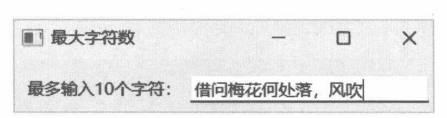
图 8-6 只能输入 10 个字符
8.1.4 输入掩码
输入掩码是一种简单的格式验证方式。掩码部分将约束输入字符的合法性，非掩码部分能起到提示作用。例如，“____省_____市____区___街___号”，其中，“_”设置了掩码，省、市、区、街等信息可输入任意字符，但门牌号通常使用整数值。有效的文本形如：河南省洛阳市洛龙区AB街135号，其输入掩码为：xxXX省 xxxXX市 xxxx区 xxX街 009号;_。
详细的掩码格式请参考表8-1。
表 8-1 输入掩码格式
| 掩码 | 说明 | 示例 |
|---|
| A | 要求出现字母，即A~Z、a~z，包含大小写 | abcDEF |
| a | 字母，与A相同，但字符可选 | xyZ |
| N | 要求出现字母或数字，即A~Z、a~z、0~9 | Ydf07d |
| n | 与N相同，但字符为可选 | x78E |
| X | 要求任何非空字符 | 12三4五 |
| x | 与X相同，但字符为可选 | xT3p |
| 9 | 要求出现数字，即0~9 | 3215 |
| 0 | 与9相同，但字符是可选的 | 01025 |
| D | 数字，但必须大于0，即1~9 | 5125 |
| d | 与D相同，但字符是可选的 | 813 |
| # | 数字0~9，可以出现“+”或“-” | 100、-45 |
| H | 十六进制数值符号，即0~9、A~F、a~f | e6FF2d4 |
| h | 与H相同，但字符为可选 | 6e7A |
| B | 二进制数值，即0~1 | 1001101 |
| b | 与B相同，但字符是可选的 | 1100 |
| > | 在“>”之后的所有字符要大写 | 无 |
| < | 在“<”之后的所有字符要小写 | 无 |
| ! | 取消大/小写切换，可以与“<”“>”一起使用 | 无 |
| ;c | 结束掩码，并设置空白字符的占位符c | 第00页;X→第XX页 |
如果要将掩码用作普通字符，需要进行转义，例如：
\AAAA;_
此掩码的含义是：文本以字母A开头（不需要输入），后跟三个字母（需要输入）。空白部分用“_”字符填充，即产生的文本为A___，有效的输入如Attt、AbMy等。掩码中第一个A由于做了转义(\A)，变为普通字符，而非掩码，因此受掩码A约束的是后面的三个字符。
8.1.5 示例：日期输入掩码
本示例将演示在QLineEdit组件中如何通过掩码输入日期。核心代码如下：
#窗口
window = QWidget()
window.setWindowTitle("输入格式化日期")
window.move(600, 385)
#布局
layout = QFormLayout()
window.setLayout(layout)
#标签
lb = QLabel("请输入日期：", window)
#文本框
txtDate = QLineEdit(window)
#设置格式标记
txtDate.setInputMask("0000年00月00日;_")
#添加到布局
layout.addRow(lb, txtDate)
#按钮
btn = QPushButton("提交", window)
layout.addRow(btn)
def onClicked():
print(f'text: {txtDate.text()}')
print(f'displayText: {txtDate.displayText()}')
#连接 clicked 信号
btn.clicked.connect(onClicked)
#显示窗口
window.show()
示例中用到的掩码是“0000年00月00日;_”，格式为“1995年5月21日”，或“2002年03月15日”。空白字符由“_”填充。
运行后文本框显示的内容如图8-7所示。
在输入时，“年”“月”“日”不需要输入，只要填入相关数字即可，如图8-8所示。
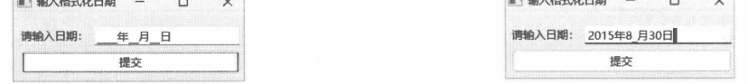
图 8-7 日期的输入掩码
图 8-8 填入日期数字
在响应按钮组件的 clicked信号的代码中，分别将 text 属性和 displayText属性的值打印到控制台窗口。单击按钮后，屏幕输出如下文本：
text：2015年8月30日
displayText：2015年8_月30日
从输出结果可以看到，text属性返回的文本已删除了占位符，而displayText属性返回的则是QLineEdit组件上所显示的内容，占位符“_”未被处理。
8.1.6 自动完成
QLineEdit 组件通过 setCompleter方法可以设置一个 QCompleter 实例，可实现在输入文本时弹出自动补全列表，用户可从中选择一项。被选择的列表项会自动将内容插入文本框中，以提高输入效率。
QCompleter 对象在初始化时需要一个列表模型（QAbstractItemModel的派生类)，但最常用的做法是直接用一个字符串列表来初始化，即调用以下构造函数。
def __init__(completions: Sequence[str],parent: Optional[QObject]=...)
8.1.7 示例：自动完成的简单应用
本示例将演示 QCompleter类的基本用法。示例创建两个 QLineEdit 组件，并用两个字符串列表作为自动完成的数据源。
两个字符串列表如下：
completeList1 = [
"山回路转",
"山谷之士",
"山林钟鼎",
"光怪陆离",
"光明磊落",
"开云见日",
"开宗明义",
"开源节流",
"周而复始",
"周听不蔽",
"周急济贫",
"法无二门",
"法不徇情"
]
completeList2 = [
"25039",
"10261",
"25861",
"39182",
"37672",
"37683",
"42856"
]
下面的代码实现示例窗口。
#窗口
win = QWidget()
win.setWindowTitle("自动完成")
win.setGeometry(505, 480, 280, 165)
#布局
layout = QVBoxLayout()
win.setLayout(layout)
#第一个文本框
txtInput1 = QLineEdit(win)
layout.addWidget(txtInput1)
#设置自动完成列表
completer1 = QCompleter(completeList1, txtInput1)
txtInput1.setCompleter(completer1)
#第二个文本框
txtInput2 = QLineEdit(win)
layout.addWidget(txtInput2)
#设置自动完成列表
completer2 = QCompleter(completeList2, txtInput2)
txtInput2.setCompleter(completer2)
#显示窗口
win.show()
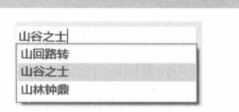
图 8-9 自动完成列表
实例化 QCompleter 对象时向其构造函数传递字符串列表，以初始化自动完成数据。随后将 QCompleter 对象传递给 QLineEdit 组件的 setCompleter 方法进行关联。
运行示例程序后，当在输入框中键入的文本与自动完成列表匹配时，QLineEdit 组件就会弹出列表视图，以供用户选择，如图 8-9 所示。
8.1.8 CompletionMode
CompletionMode枚举定义了QCompleter对象将以何种方式向用户呈现自动完成列表。各值的含义请参考表8-2。
表 8-2 CompletionMode 枚举的成员
| 枚举值 | 说明 |
|---|
| PopupCompletion | 以弹出式窗口呈现列表视图 |
| UnfilteredPopupCompletion | 以弹出式窗口呈现列表视图，并且不会进行输入筛选，即呈现完整的自动完成列表 |
| InlineCompletion | 内联方式自动完成，输入文本的剩余部分将自动追加到内容末尾，并且处于选中状态 |
下面的示例将演示 CompletionMode 枚举各值的呈现效果。示例程序在窗口上创建三个 QLineEdit 组件，依次使用 CompletionMode 枚举的值。具体代码如下：
#字符串列表，作为自动完成的数据源
strList = [
"One",
"Two",
"Three",
"Four",
"Five",
"Six",
"Seven",
"Eight",
"Nine",
"Ten",
"Eleven",
"Twelve",
"Thirteen"
]
app = QApplication()
window = QWidget()
window.setWindowTitle("自动完成模式")
#布局
layout = QGridLayout(window)
i = 0
for v in QCompleter.CompletionMode:
#标签
lb = QLabel(v.name, window)
#改变缩放策略
lb.setSizePolicy(
QSizePolicy.Policy.Maximum,
QSizePolicy.Policy.Fixed
)
layout.addWidget(lb, i, 0)
#文本框
txt = QLineEdit(window)
#设置自动完成
comp = QCompleter(strList, window)
#设置列表视图模式
comp.setCompletionMode(v)
#不区分大小写
comp.setCaseSensitivity(Qt.CaseSensitivity.CaseInsensitive)
txt.setCompleter(comp)
layout.addWidget(txt, i, 1)
i += 1
#显示窗口
window.show()
使用for循环可以列举出枚举类型中所定义的成员，name属性返回成员名称。随后在创建QCompleter实例后，调用setCompletionMode方法设置自动完成列表的呈现方式。
setCaseSensitivity(Qt.CaseSensitivity.CaseInsensitive)表示在自动完成感知时忽略大小写。
当使用 PopupCompletion 模式时，若输入的第一个字符与自动完成列表匹配就会弹出列表视图。视图中显示的项目将根据 QLineEdit 组件中输入的文本进行过滤，不匹配的列表项将隐藏，如图8-10所示。
当使用 UnfilteredPopupCompletion 模式时，不管输入的内容是否与列表中的项匹配，列表视图始终显示所有项目，如图8-11所示。
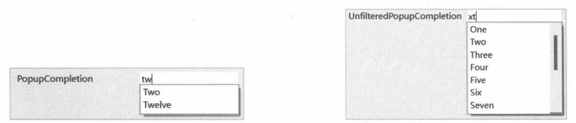
图 8-10 列表项将依据输入内容进行过滤
图 8-11 自动完成列表不会进行过滤
当使用InlineCompletion模式时，不会显示弹出式列表，QCompleter会根据所输入的内容筛选出最匹配的列表项，自动将剩余的文本追加到QLineEdit组件中，并且追加的文本被选中（按【BackSpace】键或【Delete】键可删除自动追加的内容)，如图8-12所示。
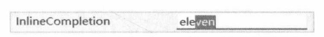
图 8-12 以内联方式自动补全输入
8.2
QTextEdit
QTextEdit组件既支持编辑多行/多段落文本，也支持设置文本样式，如字体、颜色等。QTextEdit也可以呈现图像、列表和表格。
QTextEdit 组件可以使用普通文本，或者使用 HTML、Markdown 标记的格式化文本。若文本内容较长，QTextEdit会自动显示滚动条。
8.2.1 示例：设置文本的颜色
文本颜色分为背景颜色和前景颜色。调用 setTextBackgroundColor 方法设置文本的背景颜色；设置前景颜色则调用 setTextColor 方法。本示例将实现通过单击按钮修改 QTextEdit 组件中文本的颜色。
关键的实现步骤如下。
- 实例化 QWidget 对象，将作为示例程序的主窗口。
window = QWidget()
window.setWindowTitle("修改文本颜色")
- 窗口使用网格布局。
layout = QGridLayout(window)
- 实例化 QTextEdit 组件，将其放在网格布局的第一行第二列中，并且跨两行布局。
editor = QTextEdit(window)
layout.addWidget(editor, 0, 1, 2, 1)
- 使用 QGroupBox 组件创建组合框。第一个组合框位于网格的第一行第一列所在的单元格内，里面包含 4 个按钮，垂直排列（使用 QVBoxLayout 布局）。
g1 = QGroupBox("文本的背景颜色", window)
layout.addWidget(g1, 0, 0)
#4个按钮
btnBgcs = QButtonGroup(window)
btnBgcs.addButton(QPushButton("蓝色", window), 1)
btnBgcs.addButton(QPushButton("靛蓝", window), 2)
btnBgcs.addButton(QPushButton("灰色", window), 3)
btnBgcs.addButton(QPushButton("红色", window), 4)
#按钮被单击时调用的函数
def onSetBgColor(button_id):
if button_id == 1:
editor.setTextBackgroundColor(QColor("blue"))
if button_id == 2:
editor.setTextBackgroundColor(QColor("indigo"))
if button_id == 3:
editor.setTextBackgroundColor(QColor("gray"))
if button_id == 4:
editor.setTextBackgroundColor(QColor("red"))
btnBgcs.idClicked.connect(onSetBgColor)
#将按钮放入垂直布局中
sublayout1 = QVBoxLayout(g1)
for button in btnBgcs.buttons():
sublayout1.addWidget(button)
QGroupBox将呈现带标题的面板，面板内可以放置QWidget 对象，也可以使用布局。QGroupBox组件的功能是给QWidget 对象分组，使应用程序的界面更加整齐明了。QButtonGroup对象的idClicked信号与onSetBgColor函数建立连接，只要有按钮被单击就会调用 onSetBgColor函数。按钮组件在添加到QButtonGroup 对象时已指定其id，所以在 onSetBgColor 函数中可根据 id 的值来判断用户单击了哪个按钮。
- 第二个 QGroupBox 组件内有三个按钮，用于设置文本的前景颜色。
g2 = QGroupBox("文本的前景颜色", window)
layout.addWidget(g2, 1, 0)
#三个按钮
btnFgcs = QButtonGroup(window)
btnFgcs.addButton(QPushButton("绿色", window), 1)
btnFgcs.addButton(QPushButton("浅灰色", window), 2)
btnFgcs.addButton(QPushButton("金色", window), 3)
#按钮被单击后调用以下函数
def onSetTextColor(button_id):
if button_id == 1:
editor.setTextColor(QColor("green"))
if button_id == 2:
editor.setTextColor(QColor("lightgray"))
if button_id == 3:
editor.setTextColor(QColor("gold"))
btnFgcs.idClicked.connect(onSetTextColor)
#将按钮添加到垂直布局
sublayout2 = QVBoxLayout(g2)
for b in btnFgcs.buttons():
sublayout2.addWidget(b)
- 显示窗口。
window.show()
运行示例程序后，可以先在文本框中输入一些内容，然后通过按钮改变颜色。被修改后的颜色将应用到 QTextEdit 组件中被选中的文本，或者插入点之后新输入的文本，如图8-13所示。
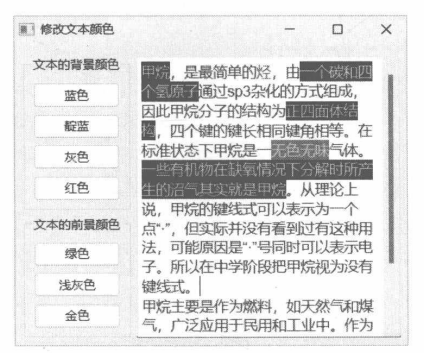
图 8-13设置 QTextEdit 组件的文本颜色
8.2.2 示例：显示 HTML 内容
本示例将演示在 QTextEdit 组件中呈现 HTML 内容的方法。setHtml 方法可直接设置要呈现的HTML。HTML内容以文本形式提供，既可以是完整的HTML文档（如包含<html>、<body>等元素)，也可以使用HTML片段（如<p>、<div>等元素)。
本示例的核心代码如下：
editor = QTextEdit()
#设置窗口标题
editor.setWindowTitle("显示HTML内容")
#设置窗口尺寸
editor.resize(352,300)
#示例 HTML 内容
html = """
<html>
<body>
<h1>第一级标题</h1>
<h2>第二级标题</h2>
<p>普通段落</p>
<div>
这是<i>倾斜文本</i>
</div>
<p>这是<b>加粗文本</b></p>
<div>
<span style="color: blue; display: block">下面是列表项: </span>
<style>
li {
list-style-type: decimal;
}
</style>
<ol>
<li>fox</li>
<li>cat</li>
<li>goose</li>
<li>octopus</li>
<li>weed</li>
</ol>
</div>
</body>
</html>
"""
#设置 HTML 内容
editor.setHtml(html)
#显示窗口
editor.show()
上述代码直接以 QTextEdit 组件充当顶层窗口（从 QWidget 派生的组件类均可以用作顶层窗口），并设置了包含<h1>、<h2>、<p>、<div>、<ol>（有序列表）等元素。其中，有序列表通过CSS属性list-style-type将序号设置为普通的十进制数字。
由于 setHtml方法可以使用不完整的HTML文档，因此上述代码中的HTML文本可以省略<html>、<body>元素。修改后的代码如下：
html = """
<h1>第一级标题</h1>
<h2>第二级标题</h2>
<p>普通段落</p>
<div>
这是<i>倾斜文本</i>
</div>
<p>这是<b>加粗文本</b></p>
<div>
<span style="color: blue; display: block">下面是列表项: </span>
<style>
li {
list-style-type: decimal;
}
</style>
<ol>
<li>fox</li>
<li>cat</li>
<li>goose</li>
<li>octopus</li>
<li>weed</li>
</ol>
</div>
"""
示例的运行效果如图8-14所示。
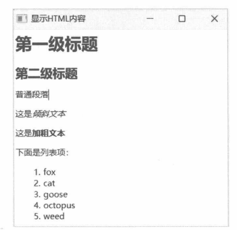
图 8-14 QTextEdit 组件呈现 HTML 内容
8.2.3 示例：通过 HTML 呈现图像
QTextEdit组件支持HTML<img>元素，可以加载图像资源。目前并不支持<audio>、<video>等元素，因此不能加载音频和视频资源。
与一般HTML文档一样，<img>元素使用 src特性指定图像文件的位置。也可以使用 width、height特性指定图像呈现后的宽度和高度。
示例的关键代码如下：
editor = QTextEdit()
#设置窗口标题
editor.setWindowTitle("显示图像")
#HTML 内容
html = """
<div>
<img src='sample.jpg'/>
</div>
<div>
陀螺仪
</div>
"""
#设置 HTML 内容
editor.setHtml(html)
#显示窗口
editor.show()
呈现效果如图8-15所示。
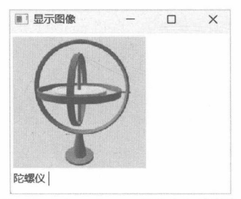
图 8-15 在 QTextEdit组件中加载图像
8.2.4 示例：显示 Markdown 内容
除了 HTML，QTextEdit 组件也支持 Markdown 文本。本示例将演示以下 Markdown 标记。
- 分级标题（1~4级)，标记为“#<文本>”“##<文本>”“###<文本>”“####<文本>”。
- 文本的倾斜与加粗。倾斜文本的标记为“*<文本>*”，加粗的标记为“**<文本>**”，倾斜并加粗的标记为“***<文本>***”。
- 表格。使用“|”划分列，用三个以上的“-”（如“----”）划分表头行与正文行。
- 无序列表，标记为“-<文本>”。
- 代码块（C语言)，标记为“"[语言]<代码块>"”。
具体的实现代码如下：
txt = QTextEdit()
#设置窗口大小
txt.resize(330, 285)
#设置窗口标题
txt.setWindowTitle("使用Markdown标记")
#设置窗口位置
txt.move(480, 400)
#Markdown 文本
markdown = """
普通段落
# 一级标题
## 二级标题
### 三级标题
#### 四级标题
*倾斜文本*
**加粗文本**
***倾斜并加粗的文本***
下面是表格：
|编号|颜色|单价|
|----|----|----|
|01|红|12.5|
|02|黑|27.3|
下面是无序列表：
- First
- Second
- Third
下面是C代码：
```C
#include<stdio.h>
int main(void)
{
printf("Hello");
return 0;
}
```
"""
#设置Markdown文本
txt.setMarkdown(markdown)
#显示窗口
txt.show()
运行结果如图8-16所示。
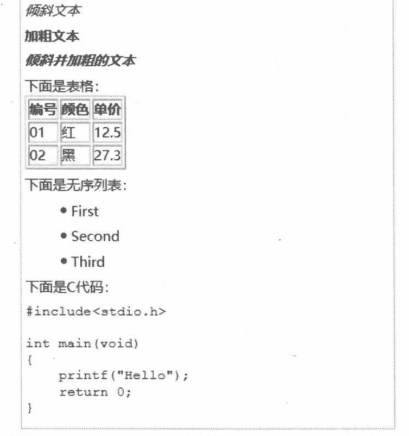
图 8-16 QTextEdit 组件呈现 Markdown 标记
8.2.5 示例：自定义上下文菜单
本示例将演示在QTextEdit组件的标准上下文菜单中添加自定义菜单项，可用于设置文本颜色。
实现思路是从 QTextEdit类派生，然后重写 contextMenuEvent方法。当用户右击时会发生 ContextMenu事件，随后会调用 contextMenuEvent 方法。在 contextMenuEvent方法中，可以创建 QMenu 实例（菜单组件)，添加菜单项，最后调用exec或popup方法显示菜单。以下两种方案均可添加自定义的上下文菜单。
先调用 QTextEdit 组件的 createStandardContextMenu方法创建标准菜单，再在标准菜单中添加自定义菜单项，最后显示菜单。
不使用标准菜单，直接实例化QMenu组件，添加菜单项，最后显示菜单即可。
本示例将在标准菜单的基础上添加设置文本颜色的菜单项。从QTextEdit派生出自定义类CustTextEdit，代码如下：
class CustTextEdit(QTextEdit):
def contextMenuEvent(self, e: QContextMenuEvent):
#创建标准菜单
menu = self.createStandardContextMenu()
menu.setAttribute(Qt.WidgetAttribute.WA_DeleteOnClose, True)
#添加分隔线
menu.addSeparator()
#添加菜单项
menu.addAction("红", lambda: self.setTextColor(QColor("red")))
menu.addAction("浅绿", lambda: self.setTextColor(QColor("lightgreen")))
menu.addAction("粉红", lambda: self.setTextColor(QColor("pink")))
menu.addAction("橙", lambda: self.setTextColor(QColor("orange")))
menu.addAction("深蓝", lambda: self.setTextColor(QColor("darkblue")))
menu.addAction("紫红", lambda: self.setTextColor(QColor("magenta")))
#弹出菜单
menu.popup(e.globalPos())
菜单项准备好后，调用popup方法显示菜单。e.globalPos方法可获取鼠标指针的屏幕坐标，用来控制菜单弹出的位置（上下文菜单通常显示在鼠标指针所在的位置)。
下面的代码实例化CustTextEdit组件，并以顶层窗口呈现于屏幕上。
edit = CustTextEdit()
edit.setWindowTitle("Demo")
edit.resize(300, 270)
edit.show()
运行示例程序后，在文本框内输入测试文本。然后选中要改变颜色的文本，右击，从上下文菜单中选择一种颜色，如图8-17所示。
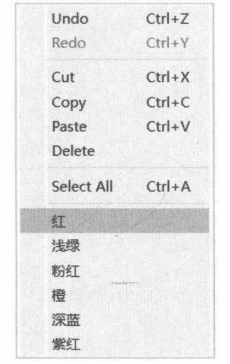
图 8-17自定义的上下文菜单
8.3
数值输入组件
虽然QLineEdit、QTextEdit组件也可以输入代表数值的文本，但在获取数值时需要额外的验证（用户可能输入非数字字符）和转换（将字符串转换为int、float等类型）工作。因此，使用专为数值输入而设计的组件可提高开发效率。
数值输入组件有两个——QSpinBox 和QDoubleSpinBox。QSpinBox组件用于输入整数值(int类型)，QDoubleSpinBox组件则用于输入浮点数值（float类型）。
数值输入组件在用户界面上呈现一个文本输入框（与QLineEdit相似），输入框旁边附带两个上下排列的按钮，默认显示向上、向下箭头。可通过setButtonSymbols方法将按钮上的符号修改为“+”“-”。
用户可以单击上方按钮来增大数值，或单击下方的按钮来减小数值。也可以通过键盘上的上、下箭头键来控制。
当输入的内容改变后，QSpinBox 和 QDoubleSpinBox 组件都会发出 textChanged、valueChanged 信号。textChanged信号传递的参数为 str类型，而 valueChanged信号所传递的是特定类型的数值。例如，QDoubleSpinBox组件发送的 valueChanged 信号，它传递的值就是 float类型。
若要获取用户输入的数值，请访问 value 方法。调用 setValue 方法可以设置组件的数值。调用 text 方法可以获取 QSpnBox 或 QDoubleSpinBox 组件中包含的文本。文本包含输入的数值，以及前缀、后缀文本。
8.3.1 示例：QSpinBox 与 QDoubleSpinBox 的使用
本示例演示的是 QSpinBox 和 QDoubleSpinBox 组件的简单用法。
自定义窗口类的实现代码如下：
class MyWindow(QWidget):
def __init__(self, parent: QWidget = None):
super().__init__(parent)
self.setWindowTitle("数值输入组件")
#布局
rootLayout = QVBoxLayout()
self.setLayout(rootLayout)
#实例化两个数值输入组件
self.spinBox = QSpinBox(self)
self.dbSpinBox = QDoubleSpinBox(self)
#添加一个按钮
self.btn = QPushButton("提 交", self)
#将组件添加到布局中
rootLayout.addWidget(self.spinBox)
rootLayout.addWidget(self.dbSpinBox)
rootLayout.addStretch(1)
rootLayout.addWidget(self.btn)
#为按钮组件处理clicked信号
self.btn.clicked.connect(self.onClicked)
def onClicked(self):
#获取QSpinBox组件中输入的整数值
intVal = self.spinBox.value()
#获取 QDoubleSpinBox 组件中输入的浮点数值
floatVal = self.dbSpinBox.value()
#组织提示消息
msg = '你输入的整数值：{0}\n你输入的浮点数值：{1}'.format(intVal, floatVal)
#弹出消息对话框
QMessageBox.information(self, "提交数值", msg)
上述代码在窗口上使用 QVBoxLayout 布局，分别添加 QSpinBox 和 QDoubleSpinBox 组件。最后添加一个按钮（QPushButton）组件。当按钮被单击后将弹出消息对话框，显示 QSpinBox、QDoubleSpinBox 组件中输入的数值。
运行示例程序后，可使用以下任意一种方法输入数值。
- 直接在文本框中输入。
- 单击▲、▼按钮调整。
- 按键盘上的上、下箭头键。
输入完成后单击“提交”按钮，应用程序会弹出如图8-18所示的对话框。
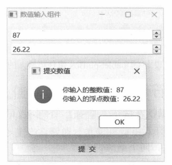
图 8-18 数值输入组件
8.3.2 示例：设置数值的有效范围
QSpinBox与 QDoubleSpinBox组件都可以设置数值的最小值和最大值，即有效数值范围（范围包含最小值和最大值)。
以下两种方案均可以设置数值范围。
- 调用 setMinimum 方法设置最小值，调用 setMaximum 方法最大值。
- 调用 setRange方法同时设置最小值和最大值。
本示例将使用 QDoubleSpinBox 组件，并通过 setRange 方法设置数值的有效范围为[500.0,1000.0]。
下面是 buildUI函数的实现代码：
def buildUI() -> QWidget:
window = QWidget()
window.setWindowTitle("设置数值范围")
#布局
layout = QVBoxLayout(window)
#标签
lb = QLabel(window)
lb.setText('最小值：500.00\n最大值：1000.00')
layout.addWidget(lb)
#浮点数值输入组件
spbox = QDoubleSpinBox(window)
#设置数值范围
spbox.setRange(500.0, 1000.0)
layout.addWidget(spbox)
#返回窗口对象
return window
buildUI函数负责创建窗口实例并初始化用户界面，最后将窗口对象返回给函数调用者。以下代码将在应用程序初始化过程中调用buildUi函数。
app = QApplication()
theWindow = buildUI()
#显示窗口
theWindow.show()
app.exec()
运行效果如图8-19所示。此时QDoubleSpinBox组件只能输入500～1000（包含最小值和最大值）
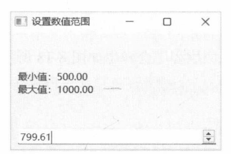
图 8-19 设定 QDoubleSpinBox 组件可输入的数值范围
8.3.3 示例：改变按钮符号
QSpinBox和QDoubleSpinBox默认在按钮上显示上、下箭头，可以通过 setButtonSymbols 方法修改。
ButtonSymbols 枚举定义了三种符号样式。
- UpDownArrows：显示向上、向下箭头。
- PlusMinus：显示“+”“-”符号。
- NoButtons：不显示按钮，外观与 QLineEdit相像。
本示例将演示这三种符号的使用，核心代码如下：
QApplication.setStyle("Fusion")
window = QWidget()
window.setWindowTitle("按钮的符号")
#布局
layout = QGridLayout(window)
#标签
labels =[
QLabel("上、下箭头：", window),
QLabel("+、-符号：", window),
QLabel("隐藏按钮：", window)
]
for lb in labels:
lb.setSizePolicy(
QSizePolicy.Policy.Maximum,
QSizePolicy.Policy.Fixed
)
#三个 QSpinBox组件
spboxes = [
QSpinBox(window),
QSpinBox(window),
QSpinBox(window)
]
#设置按钮上显示的符号类型
spboxes[0].setButtonSymbols(QSpinBox.ButtonSymbols.UpDownArrows)
spboxes[1].setButtonSymbols(QSpinBox.ButtonSymbols.PlusMinus)
spboxes[2].setButtonSymbols(QSpinBox.ButtonSymbols.NoButtons)
#将组件添加到布局
layout.addWidget(labels[0], 0, 0)
layout.addWidget(labels[1], 1, 0)
layout.addWidget(labels[2], 2, 0)
layout.addWidget(spboxes[0], 0, 1)
layout.addWidget(spboxes[1], 1, 1)
layout.addWidget(spboxes[2], 2, 1)
#显示窗口
window.show()
注意：在初始化组件前要修改应用程序的默认样式：
QApplication.setStyle("Fusion")
这是因为不是所有样式都能在按钮上显示“+”“-”。经测试，名为“Fusion”的样式支持该功能。
示例的运行结果如图8-20所示。
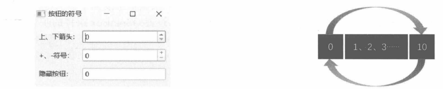
图 8-20 QSpinBox 组件上显示不同的按钮符号
图 8-21 回旋数字
8.3.4 示例：“回旋”数值
“回旋”功能使得QSpinBox组件能够循环递增或递减数值。例如，组件设定的有效范围为[0,10]，当数值增加到10时，如果继续增加，则当前数值会重新回到0；当数值为0时，如果继续减少，那么当前数值会回到10，如图8-21所示。
要让 QSpinBox 组件支持回旋功能，需要设置 setWrapping(True)。
本示例将使用[0,5]范围内的数值做演示，核心代码如下：
spinBox = QSpinBox()
#设置有效范围
spinBox.setRange(0, 5)
#开启回旋功能
spinBox.setWrapping(True)
#显示组件
spinBox.show()
运行示例代码，默认的初始值为0。此时按键盘上的向下方向键，由于0是有效范围内的最小值，无法再递减，于是就会跳到数值5；同理，当数值递增到5时，继续按向上方向键，数值就跳回0。
8.3.5 前缀与后缀
不管是 QSpinBox 还是 QDoubleSpinBox 组件，都可以设置前/后缀字符。前缀字符显示在要输入的数值前面，而后缀字符则显示在数值后面，例如：请输入内存大小：8192 MB。
其中，前缀字符为“请输入内存大小：”，后缀字符为MB，8192是用户输入的数值。
要设置前缀字符请调用 setPrefix方法，设置后缀字符就调用 setSuffix方法。请考虑下面的代码：
spinbox = QDoubleSpinBox()
spinbox.setWindowTitle("前缀与后缀")
#设置固定宽度
spinbox.setFixedWidth(265)
#设置前缀字符
spinbox.setPrefix('长度:')
#设置后缀字符
spinbox.setSuffix(" CM")
#设置有效范围
spinbox.setRange(2.0, 50.0)
#显示组件
spinbox.show()
上述代码使用的是QDoubleSpinBox组件，可输入的浮点数范围为[2.0,50.0]。前缀字符是“长度：”，后缀字符为CM。最终效果如图8-22所示。用户只能编辑浮点数值部分，前/后缀部分将无法修改。
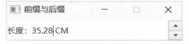
图 8-22 带前缀和后缀的数值输入框
8.3.6 步长值
QSpinBox、QDoubleSpinBox组件默认的步长值为1——每次增/减数值的量。例如，输入框中的当前数值为7，单击一次向上按钮后数值变为8；若当前值为10，按键盘上的向下箭头键，数值会变成9。
调用 setSingleStep 方法可以修改步长。例如，下面的代码设置 QSpinBox 组件的步长值为 5。
spinbox = QSpinBox()
spinbox.setWindowTitle("步长值为5")
#设置有效范围
spinbox.setRange(0, 150)
#设置步长值
spinbox.setSingleStep(5)
#设置当前值
spinbox.setValue(25)
#显示组件
spinbox.show()
运行后 QSpinBox组件默认显示的值是25，如图8-23所示。
按键盘上的向下箭头键，数值会变为20，如图8-24所示。
连续按三次向下箭头键，数值将变为35（20→25→30→35)，如图8-25所示。
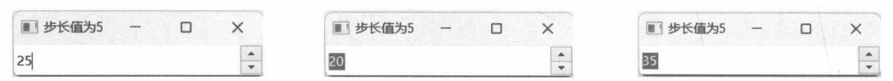
图 8-23 初始值为 25
图 8-24 当前数值变为 20
图 8-25数值变为35
8.3.7 QDoubleSpinBox 组件的精度
由于QDoubleSpinBox组件操作的是浮点数值，就会涉及小数位精度的问题。组件默认的精度为2，即保留小数点后两位。要调整浮点数精度，需要调用setDecimals方法，参数为整数值，例如：
spinBox1.setDecimals(3)
spinBox2.setDecimals(4)
上述代码设置第一个QDoubleSpinBox组件的精度为3，第二个的精度则为4，结果如图8-26所示。
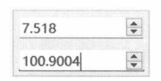
图 8-26 调整 QDoubleSpinBox 组件的精度
8.4
日期和时间
用于输入日期和时间的组件有 QDateTimeEdit、QDateEdit、QTimeEdit。
QDateTimeEdit类是核心组件，它可同时输入日期和时间。QDateEdit和QTimeEdit是从QDateTimeEdit派生的便捷类型，QDateEdit仅用于输入日期，QTimeEdit仅用于输入时间。
与QSpinBox相似，QDateTimeEdit组件也可以设置有效范围（最小值、最大值）。相关的方法成员如下。
仅约束日期部分：调用 setMinimumDate 方法设置日期最小值，调用 setMaximumDate 方法设置日期的最大值，也可以调用setDateRange方法同时设置最小值和最大值。
仅约束时间部分：调用 setMinimumTime 方法设置时间的最小值，调用 setMaximumTime 方法设置时间最大值，还可以调用setTimeRange方法同时设置最小值和最大值。
同时约束日期和时间：调用 setMinimumDateTime方法设置最小值，调用 setMaximumDateTime方法设置最大值，或者调用 setDateTimeRange方法同时设置最小值和最大值。
调用 setDisplayFormat 方法可以设置日期和时间的显示格式，如“yyyy 年MM月 dd 日HH:mm:ss”，显示结果为“2012年08月12日15:23:07”。
当QDateTimeEdit 组件（包括QDateEdit 和QTimeEdit）中输入的值改变时，它会发出以下信号。
- dateChanged:发出信号时仅传递日期部分的最新值。
- timeChanged：信号只传递时间部分的最新值。
- dateTimeChanged：信号传递最新的日期和时间。
8.4.1 示例：获取 QDateTimeEdit 中输入的值
本示例将获取QDateTimeEdit组件中输入的日期和时间，并显示在QLabel组件上。需要用到的方法成员如下。
- date：仅返回日期部分，类型为 QDate。
- time：仅返回时间部分，类型为 QTime。
- dateTime：返回日期和时间，类型为 QDateTime。
示例程序使用 QGridLayout 布局。第一行第一列放置 QDateTimeEdit 组件，第二列放置一个QPushButton，该按钮被单击后，会依次访问QDateTimeEdit 组件的 date、time、dateTime 方法，获取输入的日期和时间。第二行作为空白行，插入QSpacerItem对象，其作用是让QDateTimeEdit组件所在的行与后面 QLabel 组件所在的行保持一定距离。第三行到第五行放置 6 个 QLabel 组件。第一列中的 3个 QLabel 组件用于呈现说明文本，第二列中的 3 个 QLabel 组件分别显示 date、time、dateTime方法返回的值。
具体代码如下：
mainWin = QWidget()
mainWin.setWindowTitle("Demo")
mainWin.resize(320, 300)
#布局
layout = QGridLayout()
mainWin.setLayout(layout)
#DateTime 输入组件
dtinput = QDateTimeEdit(mainWin)
#设置自定义格式
dtinput.setDisplayFormat("yyyy-MM-dd HH:mm:ss")
#设置有效范围
dtinput.setDateTimeRange(
QDateTime(1990, 1, 1, 0, 0, 0),
QDateTime(2085, 12, 31, 23, 59, 59)
)
#添加到布局
layout.addWidget(dtinput, 0, 0)
#空白行
layout.addItem(QSpacerItem(3, 12), 1, 0)
#6个标签
caplabels = [
QLabel("date() -->", mainWin),
QLabel("time() -->", mainWin),
QLabel("dateTime() -->", mainWin)
]
for x in range(0, len(caplabels)):
caplabels[x].setSizePolicy(
QSizePolicy.Policy.Maximum,
QSizePolicy.Policy.Fixed
)
layout.addWidget(caplabels[x], x + 2, 0)
vallabels = [
QLabel(mainWin),
QLabel(mainWin),
QLabel(mainWin)
]
for i in range(0, len(vallabels)):
vallabels[i].setSizePolicy(
QSizePolicy.Policy.Expanding,
QSizePolicy.Policy.Fixed
)
layout.addWidget(vallabels[i], i + 2, 1)
#常规按钮
btnOk = QPushButton("确定", mainWin)
layout.addWidget(btnOk, 0, 1)
btnOk.setSizePolicy(
QSizePolicy.Policy.Maximum,
QSizePolicy.Policy.Minimum
)
#按钮被单击时调用
def onClicked():
#仅显示日期
vallabels[0].setText(dtinput.date().toString("yyyy年M月d日"))
#仅显示时间
vallabels[1].setText(dtinput.time().toString("HH:mm:ss"))
#显示日期和时间
vallabels[2].setText(dtinput.dateTime().toString("yyyy年M月d日 HH:mm:ss"))
btnOk.clicked.connect(onClicked)
#显示窗口
mainWin.show()
上述代码中，QLabel对象是通过列表创建的，再通过 for循环或索引来访问单个 QLabel对象。按钮组件的 clicked 信号与 onClicked 函数绑定。在函数体内分别获取 date 等方法的返回值(QDate、QTime、QDateTime 类型)，用 toString 方法转换为字符串，再传递给 QLabel 组件的 setText 方法。toString 方法在调用时可以指定自定义的格式，示例中用的是“yyyy年M月d日 HH:mm:ss”，形如“2011年5月25 日12:22:08”。
示例运行后，在QDateTimeEdit组件中输入日期和时间，然后单击“确定”按钮，QLabel组件就会显示输入的值，如图8-27所示。
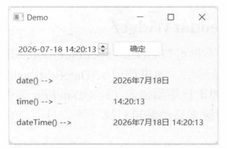
图 8-27获取输入的日期和时间
8.4.2 示例：使用日历组件
QDateTimeEdit 组件公开 setCalendarWidget 方法，可以与 QCalendarWidget 组件关联。关联后，QDateTimeEdit组件会在文本框右侧显示一个带有下拉箭头的按钮。单击按钮后，会弹出一个日历组件，用户可以在日历组件上选择日期。
本示例将使用QDateEdit组件进行演示。该组件仅用于输入日期。自定义窗口类的代码如下：
class MyWindow(QWidget):
def __init__(self, parent: QWidget = None):
super().__init__(parent)
self.setWindowTitle("使用日历组件")
self.resize(200, 200)
self.initUI()
def initUI(self):
#实例化 QDateEdit 组件
self.dtEdit = QDateEdit(QDate.currentDate(), self)
#定位
self.dtEdit.move(15, 16)
#设置有效范围
self.dtEdit.setDateRange(
QDate(2000, 2, 1),
QDate(2055, 11, 30)
)
#设置支持弹出日历组件
self.dtEdit.setCalendarPopup(True)
#设置日历组件
cld = QCalendarWidget(self)
self.dtEdit.setCalendarWidget(cld)
#标签组件
self.lbmsg = QLabel(self)
#定位
self.lbmsg.move(15, 45)
#当QDateEdit组件中输入的日期改变时更新QLabel组件中的文本
self.dtEdit.dateChanged.connect(self.onDateChanged)
#以下函数与QDateEdit.dateChanged信号关联
def onDateChanged(self, d: QDate):
self.lbmsg.setText(f'当前日期：{d.toString("yyyy-MM-dd")}')
self.lbmsg.adjustSize()
下面的代码初始化应用程序，实例化并显示 MyWindow 对象。
myApp = QApplication()
win = MyWindow()
win.show()
QApplication.exec()
运行示例程序，单击QDateEdit组件上的下拉按钮，会弹出日历组件，如图8-28所示。
8.4.3 独立使用 QCalendarWidget
日历组件（QCalendarWidget）不仅可与QDateTimeEdit/QDateEdit组件关联使用，也可以独立使用，显示日历网格。用户可以从中选择日期。如果调用setDateEditEnabled(True)方法开启编辑功能（此功能默认开启)，在选择日期时也会弹出日期编辑器（比QDateEdit组件的结构更精简)，方便用户直接输入日期按键盘上的左、右方向键来移动编辑目标（年、月、日)，按上、下方向键来增减数值，如图 8-29所示。
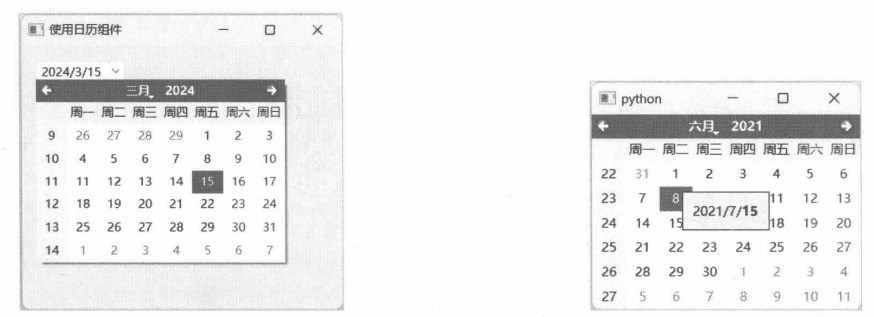
图 8-28 弹出日历组件
图 8-29 日历中弹出日期编辑器
默认情况下，当用户停止编辑日期1.5秒（1500毫秒）后，日期编辑器会自动确认并关闭。可以调用 setDateEditAcceptDelay方法修改等待确认时间，单位为毫秒。例如，下面的代码将设置日期编辑器的确认时间为10秒。
calendar.setDateEditAcceptDelay(10000)
调用selectedDate方法可以获取当前选中的日期，类型为QDate。若要手动设置当前选中的日期，请使用setSelectedDate方法，例如：
calendar.setSelectedDate(QDate(2015, 1, 30))
上述代码将日历当前选中的日期设置为2015年1月30 日。当前日期更改后，日历组件会发出selectionChanged信号。应用代码可以处理此信号，并通过 selectedDate方法获取最新的日期。